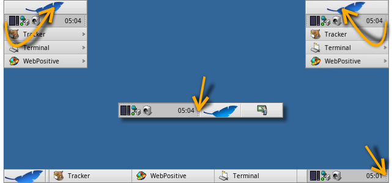
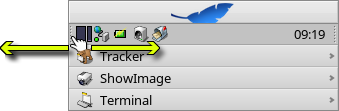
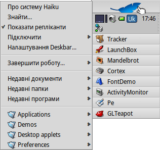
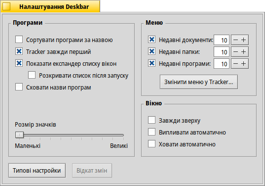
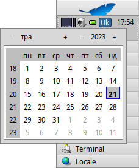
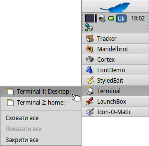

| Зміст |
|
Меню Панелі задач Системний трей Список запущених програм |
Deskbar – Панель задач
Deskbar – це маленька панель, яка за замовчуванням розташована у верхньому правому куті екрана. Вона є аналогом панелі задач Windows з кнопкою «Пуск». Вона містить меню Панелі задач, з якого Ви можете запускати програми та налаштування, лоток з годинником та іншими інструментами поряд з ним (системний трей), а також список запущених програм внизу.
Ви можете перемістити Deskbar в будь-який кут або у вигляді смуги вздовж верхньої чи нижньої межі екрана, захопивши мишею експандер з одного боку лотка (дивіться стрілки вище) і перетягнувши його в нове положення.
Ви можете згорнути панель у суперкомпактний варіант, перетягнувши трей на кнопку меню Deskbar з усім відомим листком. Оскільки висота цієї кнопки дорівнює висоті звичайного заголовка вікна, навіть вікна, які займають весь екран, не затулятимуть системний трей Deskbar з годинником і значками.
Захопивши експандер лотка з іншого боку, Ви можете змінити ширину Deskbar, перетягнувши його мишею вліво або вправо:
Ширша панель задач дозволяє розміщувати більше значків у системному треї в один рядок. Вона також рідше скорочує довгі назви програм у списку запущених програм, особливо якщо Ви використовуєте крупні значки.
 Меню Панелі задач
Меню Панелі задач
Меню відкривається, коли Ви натискаєте на кнопку «Листок» у верхній частині панелі задач Deskbar:
Про систему Haiku – Показує базову інформацію про систему, ліцензії і учасників проекту Haiku.
Знайти… – Відкриває вікно пошукових запитів Query.
Показати репліканти – Показує/приховує маркер, який використовується для перетягування, видалення або доступу до контекстного меню віджета Реплікант.
Підключити – Еквівалент пункту меню по правому кліку миші на робочому столі (дивіться Підключення дисків).
Налаштування Deskbar… – Відкриває панель конфігурації Deskbar (дивіться нижче).
Завершити роботу… – Пропонує опції або .
Недавні документи, папки, програми – Список крайніх відкритих документів, папок і програм (дивіться нижче).
Applications, Demos, Deskbar applets, Preferences – Список встановлених програм, демо-версій, аплетів і налаштувань.
Ви можете додати символьні посилання на інші програми (або будь-яку папку, документ, пошуковий запит, тощо), помістивши їх у ~/config/settings/deskbar/menu/.
Налаштування Deskbar

Панель налаштувань Deskbar поділено на три секції.
Програми
Наступні настройки стосуються не встановлених програм, а поведінки та візуального вигляду списку запущених програм.
| Сортує список запущених програм за алфавітом. | ||
| Навіть якщо Ви сортуєте за алфавітом, Tracker завжди залишається першим у списку. | ||
| Додає віджет для розкривання списку усіх вікон запущеної програми безпосередньо під її рядком у списку запущених програм. | ||
| Список усіх вікон щойно запущеної програми розкривається автоматично. | ||
| Прибирає надписи з назвами запущених програм. | ||
| Регулює розмір значків запущених програм. |
Меню
Хоча перші декілька пунктів меню Deskbar є фіксованими, Ви можете настроїти ті, що знаходяться під пунктом .
Тут Ви можете задати кількість крайніх документів, папок і програм, які будуть показані у відповідних меню Deskbar або взагалі, прибрати їх з меню панелі задач.
Кнопка відкриває каталог ~/config/settings/deskbar/menu/. У ньому Ви побачите файли і папки, які додаються до меню Deskbar після стандартних , , та .
Ви можете видаляти або додавати елементи, такі як символьні посилання на програми, документи або навіть пошукові запити, просто копіюючи/видаляючи їх до/з цього каталогу.
Програми, встановлені з пакетів, автоматично додають запис у меню Deskbar. Залежно від кількості встановлених Вами пакетів, меню може бути дещо переповненим. Якщо Ви віддаєте перевагу повному контролю і хочете бачити у меню лише ті програми, які Ви самі туди прописали (можливо, у підпапках з категоріями), ось як це зробити:
Ви створюєте символьне посилання на папку menu в ~/config/settings/deskbar/ і змінюєте назву на menu_entries. З терміналу це можна зробити за допомогою команди:
ln -s ~/config/settings/deskbar/menu ~/config/settings/deskbar/menu_entries
Вікно
Нарешті, настройки для вікна самого Deskbar.
| Deskbar завжди залишається над усіма іншими вікнами. | ||
| Deskbar випливає на передній план, коли курсор миші торкається місця, де панель задач стикається з верхнім краєм екрана і відходить на задній план, коли курсор залишає область Deskbar. | ||
| Deskbar зменшується до кількох пікселів і з'являється лише тоді, коли курсор миші торкається їх. |
Область сповіщень Панелі задач

Серед іншого, у системному треї знаходиться годинник. Наведіть на нього курсор миші, щоб відобразити дату у підказці. Зробіть лівий клік миші, щоб показати календар. Зробіть правий клік миші, щоб приховати/показати годинник або запустити панель налаштувань Time.
Будь-яка програма може встановити значок у системному треї, щоб надати користувачеві інтерфейс. Наприклад, поштова система показує інший символ, коли є непрочитана пошта, і пропонує контекстне меню, щоб створити нову або перевірити пошту. Іншим прикладом є ProcessController, який використовує свій значок у треї для надання інформації (використання процесора/пам'яті) і контекстного меню.
Список запущених програм

Ви можете перейти до певної запущеної програми, натиснувши на нього в списку запущених програм Deskbar; вибрати (одне з) її вікон у підменю. Правий клік миші на програмі відкриє підменю з якого Ви можете сховати/показати усі вікна або закрити усі вікна а разом з ними й саму програму.
Комбінація клавіш SHIFT CTRL на програмі приховує усі її вікна, клавіша CTRL показує їх знову.
Якщо для показу усіх вікон програми використовується «експандер» (розширювач), Ви можете зробити клік середньою кнопкою миші на програмі у списку, щоб запустити новий екземпляр програми. Наприклад, клік середньою кнопкою миші на запущеному StyledEdit відкриє нове вікно документа.
Можливо, ще корисніше: клік середньою кнопкою миші на вікні з натиснутою клавішею SHIFT закриває його. Зручно, наприклад, коли Ви хочете закрити деякі з багатьох відкритих вікон Tracker.
Якщо Ви увімкнули опцію відображення експандера у настройках Deskbar, Ви можете розгортати/згортати список вікон безпосередньо під пунктом програми.
Перед кожним вікном програми знаходиться значок, який надає інформацію про його стан. Світлий значок означає що вікно розгорнуте, темний – згорнуте. Три лінії перед значком означають, що вікно знаходиться в іншій робочій області.